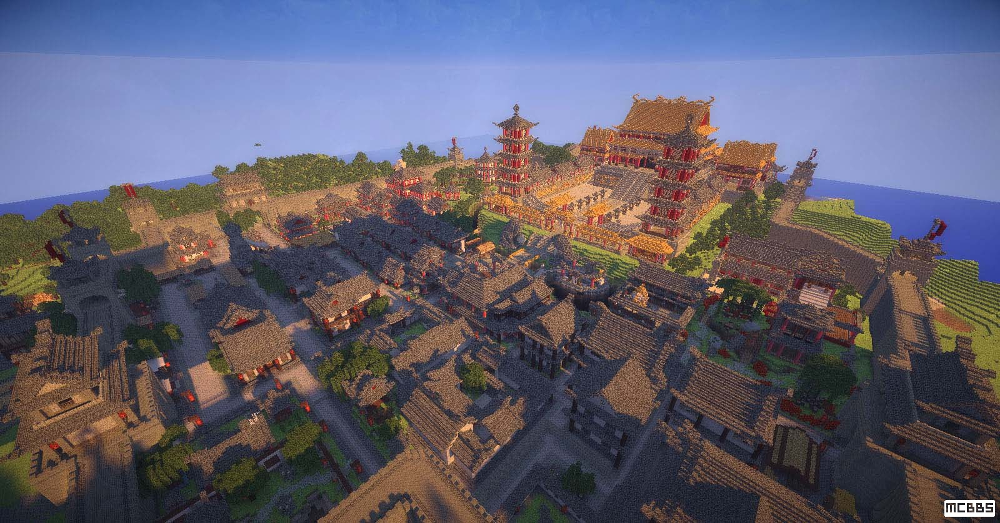
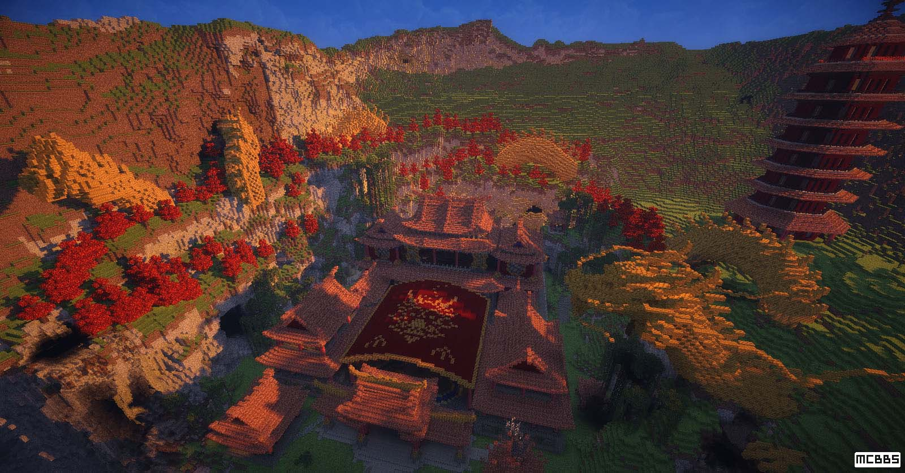
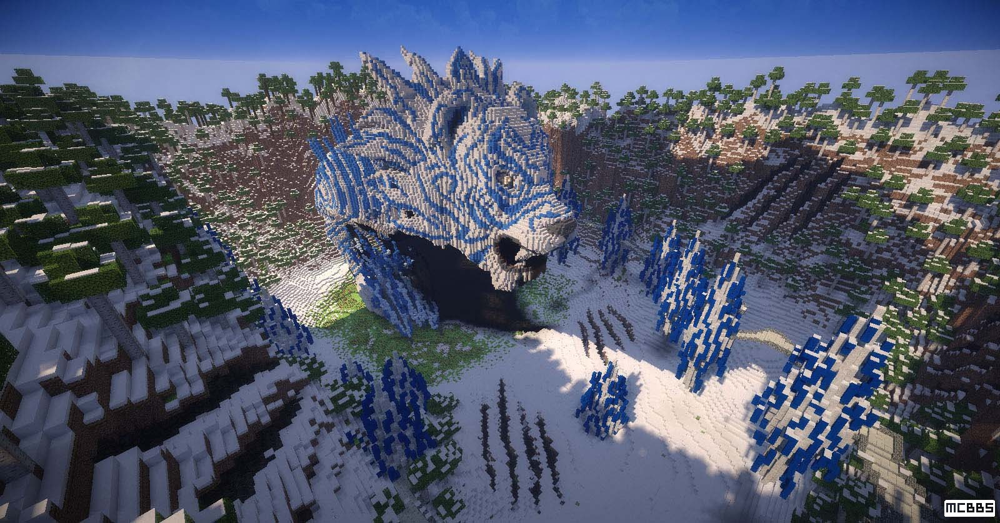
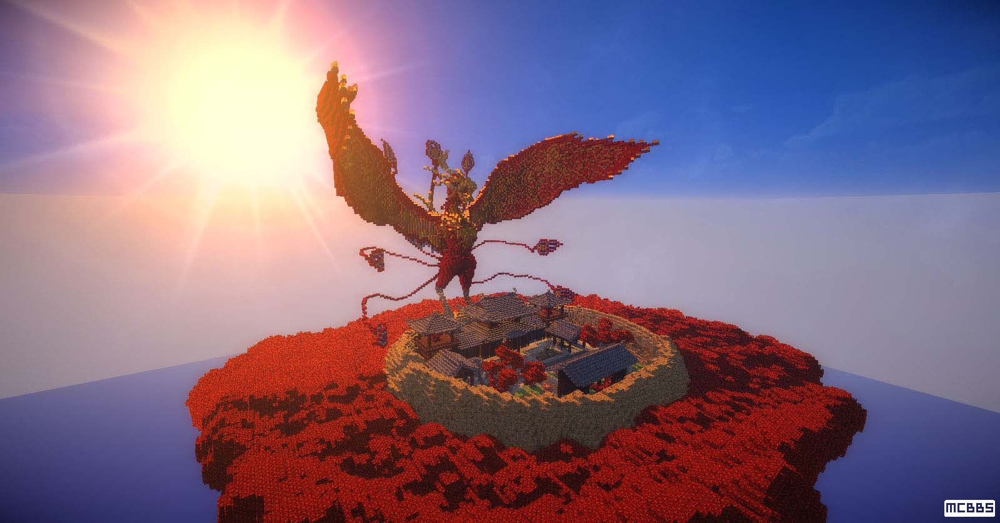
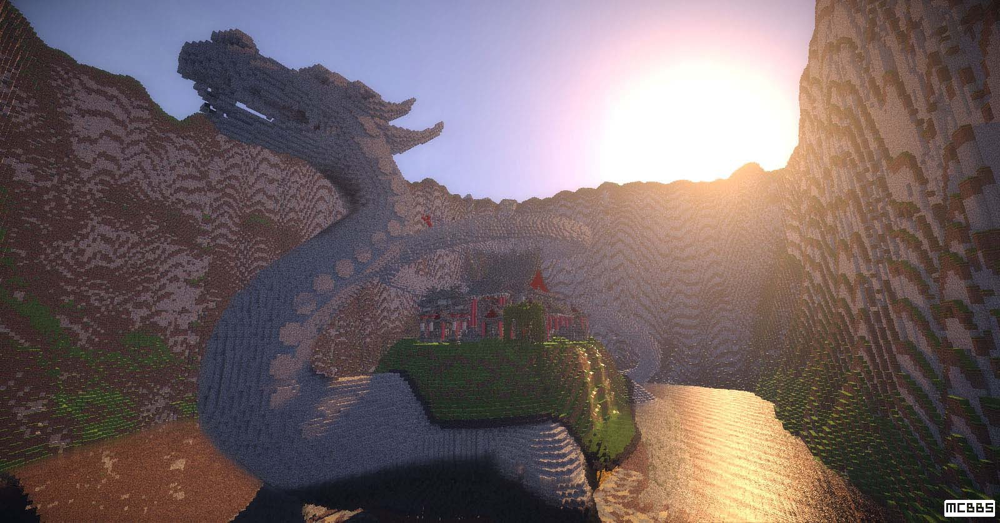
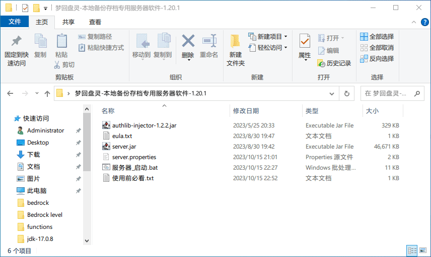
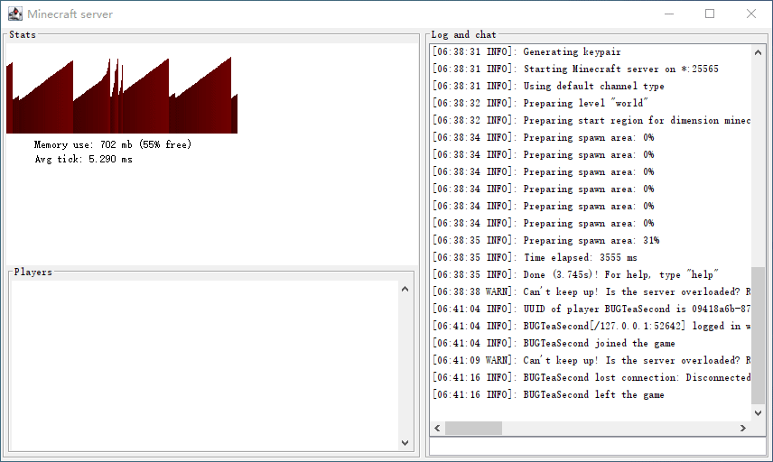

服务器的运营模式可能会变更（包括开放时间，连接方式），请定期留意此页面的更新。
原版（1.8.3）官方宣传片：showLink
原版官方网站（台湾站点需梯子）：showLink
原版官方 MCBBS 发布贴：showLink
此服务器使用了基于原版盘灵古域 1.2.3 地图，并加载了由御龙九秋大佬的梦回盘灵 1.1.0 拓展包，使其兼容 1.20.1。
相比原版，拓展包的加入改变了许多玩法，详情可见拓展包作者原帖：showLink
以下图片转自盘灵古域官方 MCBBS 帖子：
BugTea
QQ：757169500/2896431618
BiliBili：513308856
游戏内角色名：BUGTeas/BUGTeaSecond
1.20.1（安装原版游戏即可，但千万不要安装 Forge！）
" + serverStatus + "，每月的双数日（如6日、8日）凌晨 3 点至次日凌晨 3 点
使用虚拟网络软件“Tailscale”，并访问服务器分享链接，将服务器添加到虚拟网和游戏中。教程：使用 Tailscale 连接到服务器
100.90.88.116:25565（需要安装登录 Tailscale 并访问分享链接添加服务器）
仅限 LittleSkin 外置登录，正版和离线勿扰 外置认证设置指南 (LittleSkin 皮肤站)
梦回盘灵拓展包（数据包和替补文件）和资源包（材质包）版本：1.1.0b
游戏模式(gamemode)：冒险(adventure)
难度(difficulty)：正常(normal)
模拟距离(view-distance)：10
首先安装原版 Minecraft 1.20.1 并使用 Littlsekin 登录，教程见：Minecraft 安装和配置指南，然后下载梦回盘灵专用资源包（盘灵古域的游戏内容极度依赖资源包，如果使用原版或其他资源包进服会导致游戏乱码甚至出错！）然后添加服务器，之后即可开启你的盘古大陆之旅。
访问链接：showLink，在文件夹中找到“panling1.20-资源包-1.1.0b.zip”点击下载。
然后在游戏中找到设置 > 资源包 > 打开包文件夹，将下载的 ZIP 文件放到里面，然后关闭文件夹，此时游戏中就会显示这个资源包，将其加入到右侧已选区域，然后点击完成，稍等片刻即可完成资源包加载。

由于梦回盘灵基于版本跨度极大的原版1.8.3地图改制，除建筑外所有游戏系统几乎重写，难免会出现一些 Bug。现已知的 Bug 如下：
在原版盘灵古域中，玩家进入比自己地位更高的种族的领地就会被守卫射杀。而梦回盘灵也不例外，但由于系统缺陷，有些守卫会射杀自己种族的玩家，就像这样：

如果守卫所处的位置宽广，可以把守卫从下方的红框感压板推开，然后迅速离开感压板，守卫就会被立刻重置（千万不要让守卫射中感压板！），解决了这一问题。此方法也适用于 NPC 等固定位置的实体。

如果守卫或 NPC 所处的位置不方便将其推开（如角落），可以寻求服主帮助并站在实体附近不要退出，服主会尽快重置服务器上的一切实体从而解决。
连接 Tailscale，打开 showLink 下载最新备份存档（每次关服时更新）
如果不便使用 Tailscale，可以使用此备用链接：showLink
注意：服务器存档不能直接在游戏中打开，否则会丢失玩家数据！
需要下载服务器软件，打开链接：showLink，在文件夹中找到“梦回盘灵-本地备份存档专用服务器软件-1.20.1.zip”点击下载，然后将其解压，得到以下文件：
如果没有安装 Java 17 请先安装（子版本号不限），教程见：下载和安装 Java，然后将下载的备份存档压缩包中的 world 文件夹解压到当前文件夹，之后就可以双击“服务器_启动.bat”开启服务器了。（如果有防火墙提示就全部勾选然后允许访问）
如果服务器和游戏运行在同一电脑下，使用“localhost:25565”或“127.0.0.1:25565”连接到服务器，如需对外可以联系我（服主）提供技术支持。下图是检测到服务器的状态：
关服方式也非常简单，将“Minecraft Server”窗口关闭，稍微卡顿一片刻，窗口关闭，弹出服务器关闭提示，即表示服务器已彻底关闭。
"